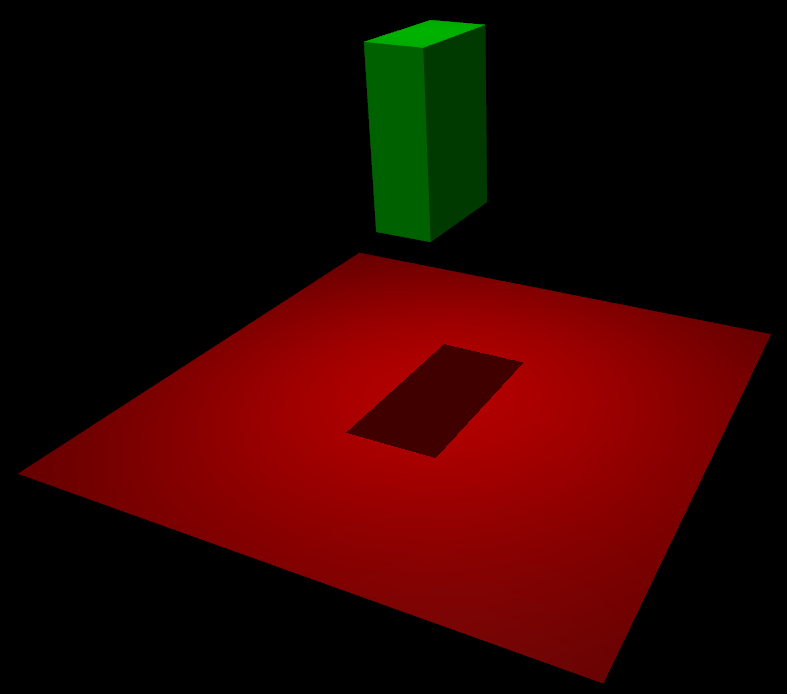
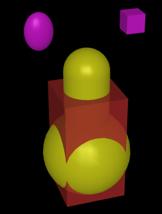

概览#
备注
本页由 AI（Claude Sonnet）根据 MuJoCo 官方英文文档（2026-11-16 版）翻译，仅供学习参考；如有出入，以英文原版为准。术语对照见资料包中的 术语表.md 。
简介#
MuJoCo 是 Multi-Joint dynamics with Contact（带接触的多关节动力学）的缩写。它是一款通用物理引擎，旨在促进机器人学、生物力学、图形学与动画、机器学习等领域的研究与开发，这些领域都需要对与环境相互作用的关节式结构进行快速而精确的仿真。MuJoCo 最初由 Roboti LLC 开发，2021 年 10 月被 Google DeepMind 收购，并 免费开放 使用，于 2022 年 5 月开源。MuJoCo 代码库位于 GitHub 的 google-deepmind/mujoco 仓库。
若要在浏览器中直接体验 MuJoCo 而无需安装任何东西，请访问 mujoco.org 网站。若要在浏览器中查看或拖放你自己的模型，请打开 live.mujoco.org 站点，该站点运行的是 MuJoCo Studio 应用的 WebAssembly 版本（无需安装即可查看，但比原生 C 慢）。
MuJoCo 是一个带有 C API 的 C/C++ 库，面向研究人员和开发者。运行时仿真模块经过调优以最大化性能，并在由内置 XML 解析器和编译器预先分配的底层数据结构上运行。用户使用原生的 MJCF 场景描述语言来定义模型——这是一种被设计得尽可能便于人类阅读和编辑的 XML 文件格式。也可以加载 URDF 模型文件。该库提供 交互式可视化（interactive visualization） 功能，可在原生桌面窗口和网页浏览器中使用。MuJoCo 还提供大量用于计算物理相关量的实用函数。
MuJoCo 可用于实现基于模型的计算，例如控制综合、状态估计、系统辨识、机构设计、通过逆动力学（inverse dynamics）进行数据分析，以及面向机器学习应用的并行采样。它也可以用作更传统的仿真器，包括用于游戏和交互式虚拟环境。
主要特性#
MuJoCo 拥有一长串特性，这里概述其中最值得注意的几项。
- 广义坐标与现代接触动力学相结合Generalized coordinates combined with modern contact dynamics
物理引擎传统上分为两类。机器人学和生物力学引擎在广义坐标（generalized coordinates，即关节坐标）下使用高效而精确的递归算法，但它们要么不处理接触动力学，要么依赖较早的弹簧-阻尼方法，而这种方法需要非常小的时间步长（time step）。游戏引擎则采用更现代的方法，通过求解优化问题来得到接触力。然而它们往往采用过度描述的笛卡尔表示，通过数值方式施加关节约束（constraint），当涉及复杂的运动学结构时会造成不精确和不稳定。MuJoCo 率先将广义坐标下的仿真与基于优化的接触动力学结合起来，此后这一方法已被其他仿真器采用。习惯了游戏引擎的用户起初可能会觉得广义坐标不够直观，参见下文 补充说明 一节。
Physics engines have traditionally separated in two categories. Robotics and biomechanics engines use efficient and accurate recursive algorithms in generalized or joint coordinates. However they either leave out contact dynamics, or rely on the earlier spring-damper approach which requires very small time-steps. Gaming engines use a more modern approach where contact forces are found by solving an optimization problem. However, they often resort to the over-specified Cartesian representation where joint constraints are imposed numerically, causing inaccuracies and instabilities when elaborate kinematic structures are involved. MuJoCo pioneered the combination of simulation in generalized coordinates with optimization-based contact dynamics. This approach has since been adopted by other simulators. Users accustomed to gaming engines may find the generalized coordinates counterintuitive at first; see Clarifications section below.- 软、凸且可解析求逆的接触动力学Soft, convex and analytically-invertible contact dynamics
在现代接触动力学方法中，摩擦接触（contact）产生的力或冲量通常被定义为线性或非线性互补问题（complementarity problem，LCP 或 NCP）的解，这两者都是 NP 难的。MuJoCo 基于对接触物理的另一种表述，该表述可归结为凸优化（convex optimization）问题，详见 计算 一章。我们的模型允许软接触（soft contact）和其他约束，并具有唯一定义的逆，便于数据分析和控制应用。默认的牛顿求解器（solver）提供二次收敛；备选算法包括共轭梯度法和能够处理椭圆型摩擦锥的广义投影高斯-赛德尔（Projected Gauss-Seidel）方法。求解器对摩擦接触进行统一处理，包括扭转摩擦和滚动摩擦、无摩擦接触、关节与肌腱限位、关节与肌腱中的干摩擦，以及多种等式约束。
In the modern approach to contact dynamics, the forces or impulses caused by frictional contacts are usually defined as the solution to a linear or non-linear complementarity problem (LCP or NCP), both of which are NP-hard. MuJoCo is based on a different formulation of the physics of contact which reduces to a convex optimization problem, as explained in detail in the Computation chapter. Our model allows soft contacts and other constraints, and has a uniquely-defined inverse facilitating data analysis and control applications. The default Newton solver provides quadratic convergence; alternative algorithms include a conjugate gradient method and a generalized Projected Gauss-Seidel method that can handle elliptic friction cones. The solver provides unified treatment of frictional contacts including torsional and rolling friction, frictionless contacts, joint and tendon limits, dry friction in joints and tendons, as well as a variety of equality constraints.- 肌腱几何Tendon geometry
MuJoCo 可以对肌腱（tendon）的三维几何建模——肌腱是服从包绕和经过点约束的最短路径弦。其机制与 OpenSim 中的类似，但实现了一组更受限的闭式包绕选项以加快计算。它还提供机器人学专用的结构，例如滑轮和耦合自由度（degree of freedom，DoF）。肌腱既可以用于驱动，也可以对肌腱长度施加不等式或等式约束。
MuJoCo can model the 3D geometry of tendons – which are minimum-path-length strings obeying wrapping and via-point constraints. The mechanism is similar to the one in OpenSim but implements a more restricted, closed-form set of wrapping options to speed up computation. It also offers robotics-specific structures such as pulleys and coupled degrees of freedom. Tendons can be used for actuation as well as to impose inequality or equality constraints on the tendon length.- 通用驱动模型General actuation model
在使用与模型无关的 API 的同时设计足够丰富的驱动模型是具有挑战性的。MuJoCo 通过采用抽象的执行器（actuator）模型来实现这一目标，该模型可以具有不同类型的传动（transmission）、力的生成和内部动力学（即让整体动力学成为三阶的状态变量）。这些组件可以被实例化，从而以统一的方式对电机、气动和液压缸、PD 控制器、生物肌肉以及许多其他执行器建模。
Designing a sufficiently rich actuation model while using a model-agnostic API is challenging. MuJoCo achieves this goal by adopting an abstract actuation model that can have different types of transmission, force generation, and internal dynamics (i.e., state variables which make the overall dynamics 3rd order). These components can be instantiated so as to model motors, pneumatic and hydraulic cylinders, PD controllers, biological muscles and many other actuators in a unified way.- 可重构的计算流水线Reconfigurable computation pipeline
MuJoCo 的顶层步进函数 mj_step 会运行完整的正动力学（forward dynamics）并推进仿真状态。然而在仿真之外的许多应用中，能够只运行计算流水线的选定部分是有益的。为此，MuJoCo 提供了大量 标志 可供任意组合设置，使用户除了通过 选项 选择算法和算法参数之外，还能按需重新配置流水线。此外，许多较底层的函数可以被直接调用。用户定义的回调函数可以实现自定义力场、执行器、碰撞例程和反馈控制器。
MuJoCo has a top-level stepper function mj_step which runs the entire forward dynamics and advances the state of the simulation. In many applications beyond simulation, however, it is beneficial to be able to run selected parts of the computation pipeline. To this end MuJoCo provides a large number of flags which can be set in any combination, allowing the user to reconfigure the pipeline as needed, beyond the selection of algorithms and algorithm parameters via options. Furthermore many lower-level functions can be called directly. User-defined callbacks can implement custom force fields, actuators, collision routines, and feedback controllers.- 模型编译Model compilation
如上所述，用户用称为 MJCF 的 XML 文件格式定义 MuJoCo 模型（model）。该模型随后由内置编译器编译成 mjModel 这一底层数据结构，它是交叉索引的，并针对运行时计算做了优化。编译后的模型也可以保存为二进制 MJB 文件。
As mentioned above, the user defines a MuJoCo model in an XML file format called MJCF. This model is then compiled by the built-in compiler into the low-level data structure mjModel, which is cross-indexed and optimized for runtime computation. The compiled model can also be saved in a binary MJB file.
- 模型与数据的分离Separation of model and data
MuJoCo 在运行时将仿真参数分为两个数据结构（C 结构体）：
MuJoCo separates simulation parameters into two data structures (C structs) at runtime:mjModel 包含模型描述，预期保持不变。其中嵌入了其他包含仿真和可视化选项的结构，这些选项偶尔需要修改，但这是由用户完成的。
mjModel contains the model description and is expected to remain constant. There are other structures embedded in it that contain simulation and visualization options, and those options need to be changed occasionally, but this is done by the user.mjData 包含所有动态变量和中间结果。它被用作一块暂存区，所有函数从中读取输入并向其写入输出——这些输出随后成为仿真流水线后续阶段的输入。它还包含一个预先分配并由内部管理的栈，因此运行时模块在模型初始化之后无需调用内存分配函数。
mjData contains all dynamic variables and intermediate results. It is used as a scratch pad where all functions read their inputs and write their outputs – which then become the inputs to subsequent stages in the simulation pipeline. It also contains a preallocated and internally managed stack, so that the runtime module does not need to call memory allocation functions after the model is initialized.
其中 mjModel 由编译器构建，而 mjData 在运行时根据 mjModel 构建。这种分离使得模拟多个模型、以及针对每个模型模拟多个状态和控制变得容易，进而便于采样所需的 多线程 与 有限差分 计算。顶层 API 函数体现了这一基本分离，格式如下：
mjModel is constructed by the compiler. mjData is constructed at runtime, given mjModel. This separation makes it easy to simulate multiple models as well as multiple states and controls for each model, in turn facilitating multi-threading for sampling and finite differences. The top-level API functions reflect this basic separation, and have the format:void mj_step(const mjModel* m, mjData* d);
- 性能Performance
MuJoCo 的运行时在初始化之后不执行任何内存分配——所有工作内存都预先分配在
mjData中。单个仿真步默认是单线程的，但 约束岛 使得在单步内按岛并行成为可能。通过创建多个共享同一个mjModel的mjData实例并在不同线程上运行它们，可以实现大规模数据并行采样；详见 多线程 一节。MuJoCo’s runtime performs zero memory allocations after initialization – all working memory is preallocated inmjData. A single simulation step is single-threaded by default, but constraint islands enable per-island parallelism within a step. Large-scale data-parallel sampling is achieved by creating multiplemjDatainstances that share the samemjModeland running them on separate threads; see multi-threading.- 交互式仿真与可视化Interactive simulation and visualization
MuJoCo Studio 是 MuJoCo 面向 C++ 和 Python 的现代可视化 SDK，结合了基于物理的 Filament 渲染（rendering）、Dear ImGui 面板和模块化插件。Studio 应用既可以在桌面端原生运行 (独立应用)，也可以通过 WebAssembly 在浏览器中运行，地址为 live.mujoco.org (浏览器版本)，Python 仿真则可以挂接 原生窗口 或无头的 网页查看器。
MuJoCo Studio is MuJoCo’s modern visualization SDK for C++ and Python, combining physically based Filament rendering, Dear ImGui panels, and modular plugins. The Studio app runs natively on desktop (standalone app) and in the browser via WebAssembly at live.mujoco.org (browser build), and Python simulations can attach either a native window or a headless web viewer.MuJoCo 还包含一个经典的 OpenGL 渲染器 (由 simulate.cc 示例使用)，可渲染网格（mesh）和几何基元、纹理、反射、阴影、雾、透明度、线框、天空盒，以及立体可视化（需要显卡支持四缓冲 OpenGL）。Studio 和
simulate都构建在 抽象三维可视化器 之上，通过各种视觉辅助帮助用户深入理解物理仿真，例如自动生成的模型骨架、等效惯性盒、接触位置和法线、分解为法向和切向分量的接触力、外部扰动力、局部坐标系、关节与执行器轴线以及文字标签。一个相关的易用性特性是能够“伸手进入”仿真，推动物体并观察物理如何响应：用户选择要施加外力和力矩的刚体（body），并看到扰动及其动力学后果的实时渲染。这可用于直观地调试模型、测试反馈控制器的响应，或将模型配置到期望的姿态。MuJoCo also includes a classic OpenGL renderer (used by the simulate.cc sample) that renders meshes and geometric primitives, textures, reflections, shadows, fog, transparency, wireframes, skyboxes, and stereoscopic visualization (on video cards supporting quad-buffered OpenGL). Both Studio andsimulatebuild on the abstract 3D visualizer to help users gain insight into the physics simulation through visual aids such as automatically generated model skeletons, equivalent inertia boxes, contact positions and normals, contact forces separated into normal and tangential components, external perturbation forces, local frames, joint and actuator axes, and text labels. A related usability feature is the ability to “reach into” the simulation, push objects around, and see how the physics respond: the user selects the body to which external forces and torques will be applied, and sees a real-time rendering of the perturbations together with their dynamic consequences. This can be used to debug the model visually, test the response of a feedback controller, or configure the model into a desired pose.- 强大而直观的建模语言Powerful yet intuitive modeling language
MuJoCo 有自己的建模语言，称为 MJCF。MJCF 的目标是让用户能够访问 MuJoCo 的全部计算能力，同时使用户能够快速开发新模型并对其进行实验。这一目标在很大程度上得益于一套完善的 默认设置 机制，它类似于内联在 HTML 中的层叠样式表（CSS）。虽然 MJCF 有许多元素和属性，但在任何给定的模型中，用户需要设置的却出奇地少。这使得 MJCF 文件比许多其他格式更短、更易读。
MuJoCo has its own modeling language called MJCF. The goal of MJCF is to provide access to all of MuJoCo’s compute capabilities, and at the same time enable users to develop new models quickly and experiment with them. This goal is achieved in large part due to an extensive default setting mechanism that resembles Cascading Style Sheets (CSS) inlined in HTML. While MJCF has many elements and attributes, the user needs to set surprisingly few of them in any given model. This makes MJCF files shorter and more readable than many other formats.- 可变形物体与自动生成Deformable objects and automated generation
MuJoCo 通过 flex 元素原生地对可变形的一维杆和缆绳、二维布料和壳体以及三维软体建模，该元素结合了运动的顶点与可拉伸的几何元素、连续体和离散杆弹性，以及可变形碰撞检测（collision detection）。高层的 flexcomp 宏会自动将网格、栅格和参数化形状展开为底层的刚体、关节（joint）、约束和 flex 元素，它们与仿真的其余部分完全交互。
MuJoCo natively models deformable 1D rods and cables, 2D cloths and shells, and 3D soft bodies via the flex element, which combines moving vertices with stretchable geometric elements, continuum and discrete-rod elasticity, and deformable collision detection. The high-level flexcomp macro automatically expands meshes, grids, and parametric shapes into the underlying bodies, joints, constraints, and flex elements, which fully interact with the rest of the simulation.- 约束岛与休眠Constraint islands and sleeping
约束求解器会自动发现相互独立的 约束岛 (即由约束耦合、可独立求解的刚体组)。这使得按岛并行成为可能，并避免过度求解：每个岛按其所需的迭代次数收敛，而不受约束的自由度会被完全跳过。此外，通过 岛休眠 可以冻结静止的岛，当场景的部分处于静止时可大幅减少计算量。
The constraint solver automatically discovers independent constraint islands – groups of bodies coupled by constraints that can be solved independently. This enables per-island parallelism and avoids over-solving: each island converges with the number of iterations it needs, and unconstrained degrees of freedom are skipped entirely. Additionally, island sleeping can freeze stationary islands, substantially reducing computation when parts of the scene are at rest.- 插件系统Plugin system
MuJoCo 支持 引擎插件 这一机制，用于以自定义元素扩展物理引擎：传感器（sensor）、执行器和被动力。插件是动态加载的共享库，向引擎注册自身，并按模型元素实例化。这使得无需修改核心引擎即可扩展 MuJoCo。
MuJoCo supports engine plugins that extend the physics engine with custom elements: sensors, actuators, and passive forces. Plugins are dynamically loaded shared libraries that register themselves with the engine and are instantiated per model element. This allows extending MuJoCo without modifying the core engine.- GPU 加速后端GPU-accelerated backends
除 C 引擎之外，MuJoCo 还有用于大规模并行仿真的 GPU 加速后端，即 MJX (JAX) 和 MuJoCo Warp (NVIDIA Warp)。两个后端使用相同的
mjModel和mjData结构，因此可以在 CPU 与 GPU 之间无缝传输。一流的 Python 绑定 提供对完整 C API 的访问。In addition to the C engine, MuJoCo has GPU-accelerated backends for large-scale parallel simulation: MJX (JAX) and MuJoCo Warp (NVIDIA Warp). Both backends consume the samemjModelandmjDatastructures, allowing seamless transfer between CPU and GPU. First-class Python bindings provide access to the full C API.
模型实例#
MuJoCo 中有几个实体都被称为“模型”。用户在以 MJCF 或 URDF 编写的 XML 文件中定义模型。软件随后可以在不同的介质（文件或内存）和不同的描述层级（高层或低层）上创建同一模型的多个实例。所有组合都是可能的，如下表所示：
高层 High level |
低层 Low level |
|
|---|---|---|
文件 File |
MJCF/URDF (XML), MJZ (Zip 压缩包) MJCF/URDF (XML), MJZ (Zip archive) |
MJB (二进制) MJB (binary) |
内存 Memory |
mjSpec (C 结构体) mjSpec (C struct) |
mjModel (C 结构体) mjModel (C struct) |
所有运行时计算都用 mjModel 完成，而它过于复杂，无法手动创建。这就是我们设置两个建模层级的原因。高层存在的目的是方便用户：其唯一用途就是被编译成低层模型，计算在低层模型上进行。得到的 mjModel 可以加载并保存为二进制文件 (MJB)，但这类文件与版本相关且无法反编译，因此模型应始终以 XML 文件形式维护，或打包成 MJZ 归档。
mjSpec C 结构体与 MJCF 文件格式一一对应。XML 加载器解释 MJCF 或 URDF 文件，创建相应的 mjSpec 并将其编译为 mjModel。用户可以通过编程方式创建 mjSpec，然后将其保存为 MJCF/MJZ 或进行编译。程序化的模型创建与编辑在 模型编辑 一章中描述。
下图展示了通往 mjModel 的不同路径：
(文本编辑器) → MJCF/URDF 文件 → (MuJoCo 解析器 → mjSpec → 编译器) → mjModel
(text editor) → MJCF/URDF file → (MuJoCo parser → mjSpec → compiler) → mjModelMJZ 归档 → (MJZ 解码器 → mjSpec → 编译器) → mjModel
MJZ archive → (MJZ decoder → mjSpec → compiler) → mjModel(用户代码) → mjSpec → (MuJoCo 编译器) → mjModel
(user code) → mjSpec → (MuJoCo compiler) → mjModelMJB 文件 → (模型加载器) → mjModel
MJB file → (model loader) → mjModel
也可以使用 mj_encode 将模型和规格序列化或打包回磁盘。
示例#
下面是一个用 MuJoCo 的 MJCF 格式编写的简单模型。它定义了一个固定在世界上的平面、一盏用于更好地照亮物体并投射阴影的灯光，以及一个具有 6 个自由度的浮动方块（这就是“free”关节的作用）。
<mujoco>
<worldbody>
<light diffuse=".5 .5 .5" pos="0 0 3" dir="0 0 -1"/>
<geom type="plane" size="1 1 0.1" rgba=".9 0 0 1"/>
<body pos="0 0 1">
<joint type="free"/>
<geom type="box" size=".1 .2 .3" rgba="0 .9 0 1"/>
</body>
</worldbody>
</mujoco>
内置的 OpenGL 可视化器将该模型渲染为：


如果对该模型进行仿真，方块将落到地面上。下面给出了不带渲染的被动动力学基本仿真代码。
#include "mujoco.h"
#include "stdio.h"
char error[1000];
mjModel* m;
mjData* d;
int main(void) {
// load model from file and check for errors
m = mj_loadXML("hello.xml", NULL, error, 1000);
if (!m) {
printf("%s\n", error);
return 1;
}
// make data corresponding to model
d = mj_makeData(m);
// run simulation for 10 seconds
while (d->time < 10)
mj_step(m, d);
// free model and data
mj_deleteData(d);
mj_deleteModel(m);
return 0;
}
这在技术上是一个 C 文件，但它同时也是合法的 C++ 文件。事实上 MuJoCo API 同时兼容 C 和 C++。通常用户代码会用 C++ 编写，因为这样更方便，而且不会牺牲效率，因为计算瓶颈位于已经高度优化的仿真器中。
函数 mj_step 是将仿真状态推进一个时间步长的顶层函数。当然，这个例子只是一个被动动力系统。当用户指定控制或施加力并开始与系统交互时，事情会变得更有趣。
接下来我们提供一个更复杂的例子，展示 MJCF 的若干特性。考虑下面这个 example.xml 文件：
<mujoco model="example">
<default>
<geom rgba=".8 .6 .4 1"/>
</default>
<asset>
<texture type="skybox" builtin="gradient" rgb1="1 1 1" rgb2=".6 .8 1" width="256" height="256"/>
</asset>
<worldbody>
<light pos="0 1 1" dir="0 -1 -1" diffuse="1 1 1"/>
<body pos="0 0 1">
<joint type="ball"/>
<geom type="capsule" size="0.06" fromto="0 0 0 0 0 -.4"/>
<body pos="0 0 -0.4">
<joint axis="0 1 0"/>
<joint axis="1 0 0"/>
<geom type="capsule" size="0.04" fromto="0 0 0 .3 0 0"/>
<body pos=".3 0 0">
<joint axis="0 1 0"/>
<joint axis="0 0 1"/>
<geom pos=".1 0 0" size="0.1 0.08 0.02" type="ellipsoid"/>
<site name="end1" pos="0.2 0 0" size="0.01"/>
</body>
</body>
</body>
<body pos="0.3 0 0.1">
<joint type="free"/>
<geom size="0.07 0.1" type="cylinder"/>
<site name="end2" pos="0 0 0.1" size="0.01"/>
</body>
</worldbody>
<tendon>
<spatial limited="true" range="0 0.6" width="0.005">
<site site="end1"/>
<site site="end2"/>
</spatial>
</tendon>
</mujoco>
该模型是一条 7 自由度的机械臂“握着”一根弦，弦的另一端系着一个圆柱体。弦被实现为带长度限位的肌腱。肩部有一个球关节，肘部和腕部各有一对铰链关节。圆柱体内部的方框表示一个自由“关节”。XML 中最外层的 body 元素就是必需的 worldbody 元素。请注意，在两个刚体之间使用多个关节并不需要创建虚拟刚体。
MJCF 文件只包含指定模型所需的最少信息。胶囊体由空间中的线段定义——这时只需要胶囊体的半径。刚体坐标系的位置和朝向由属于它们的 geom 推断。惯性属性在均匀密度假设下由 geom 形状推断。两个 site 之所以有名字，是因为肌腱定义需要引用它们，除此之外没有任何东西被命名。关节轴只为铰链关节定义，球关节则没有。碰撞规则是自动定义的。摩擦属性、重力、仿真时间步长等都设为默认值。顶部指定的默认 geom 颜色适用于所有 geom。
除了把编译后的模型保存为二进制 MJB 格式外，我们还可以将其保存为 MJCF 或人类可读的文本，分别是 example_saved.xml 和 example_saved.txt 这两个文件。XML 版本与原始文件相似，而文本版本包含 mjModel 中的全部信息。将文本版本与 XML 版本比较，就能看出模型编译器替我们做了多少工作。
mjModel. Comparing the text version to the XML version reveals how much work the model compiler did for us.模型元素#
本节简要描述 MuJoCo 模型中可以包含的所有元素。后文将更详细地解释其背后的计算、元素在 MJCF 中的指定方式，以及它们在 mjModel 中的表示。
mjModel.选项#
每个模型都有下面列出的三组选项，它们始终存在。如果 XML 文件中没有指定其值，则使用默认值。这些选项的设计使得用户可以在每个仿真时间步长之前更改它们的值。不过在一个时间步长内，不应更改任何选项。
mjOption#
该结构包含所有影响物理仿真的选项。它用于选择算法并设置其参数，启用和禁用仿真流水线的不同部分，以及调整重力等系统级物理属性。
mjVisual#
该结构包含所有可视化选项。另外还有一些 OpenGL 渲染选项，但它们依赖于会话，不属于模型的一部分。
mjStatistic#
该结构包含由编译器计算的模型统计信息：平均刚体质量、模型的空间范围等。它的存在是出于信息目的，同时也因为可视化器用它进行自动缩放。
资源#
资源本身并不是模型元素。模型元素可以引用资源，此时资源会以某种方式改变引用它的元素的属性。一个资源可以被多个模型元素引用。由于包含资源的唯一目的就是被引用，而引用只能通过名称进行，因此每个资源都有名称（适用时可以从文件名推断）。相比之下，普通元素的名称可以不定义。
网格#
MuJoCo 可以从 OBJ 文件和二进制 STL 加载三角网格。可以使用 MeshLab 等软件从其他格式转换。虽然任何三角形集合都可以作为网格加载和可视化，但碰撞检测器使用的是凸包。有一些编译时选项可用于缩放网格，以及为其拟合基本几何形状。网格还可以用来自动推断惯性属性——将其视为三棱锥的并集，并合并它们的质量和惯性。注意网格没有颜色，网格的颜色由引用它的 geom 的材质属性决定。相比之下，所有空间属性都由网格数据决定。MuJoCo 同时支持 OBJ 和用于法线和纹理坐标的自定义二进制文件格式。网格也可以直接嵌入 XML 中。
蒙皮#
蒙皮网格（或称蒙皮）是形状可以在运行时变形的网格。它们的顶点附着在刚体（在此语境下称为骨骼）上，每个顶点可以属于多个骨骼，从而使蒙皮平滑变形。蒙皮纯粹是可视化对象，不影响物理，但仍能显著增强视觉真实感。与网格类似，蒙皮可以从自定义二进制文件加载，或直接嵌入 XML 中。
高度场#
高度场可以从 PNG 文件（内部转换为灰度）或后文描述的自定义二进制格式文件加载。高度场是一个由高程数据构成的矩形网格。编译器将数据归一化到范围 [0-1]。高度场的实际空间范围随后由引用它的 geom 的尺寸参数决定。高度场只能被附着在世界刚体上的 geom 引用。出于渲染和碰撞检测的目的，网格的矩形会被自动三角化，因此高度场被视为三棱柱的并集。与这种复合物体的碰撞检测原则上可能为单个 geom 对生成大量接触点。如果发生这种情况，只保留前 64 个接触点。其理由是，高度场应当用来为地形图建模，其空间特征相对于仿真中的其他物体较大，所以对于设计良好的模型，接触数量会很少。
纹理#
纹理可以从 PNG 或 KTX 文件加载，也可以由编译器根据用户定义的程序化参数合成。还可以在创建模型时将纹理留空，之后在运行时更改——以便在 MuJoCo 仿真中渲染视频，或创造其他动态效果。可视化器支持两种纹理映射：二维和立方体。二维映射适用于平面和高度场。立方体映射适用于将纹理“收缩包裹”在三维物体周围而无需指定纹理坐标，它也用于创建天空盒。立方体贴图的六个面可以从单独的图像文件加载，也可以从一个合成图像文件加载，或通过重复同一幅图像生成。与所有其他直接从模型元素引用的资源不同，纹理只能被另一种资源（即材质）引用，再由模型元素引用该材质。
材质#
材质用于控制 geom、site 和肌腱的外观。做法是从相应的模型元素引用材质。外观包括纹理映射，以及与下述 OpenGL 光源相互作用的其他属性：RGBA、镜面反射、光泽度、自发光。材质还可以用来让物体具有反射效果。目前反射只在平面和方块的 Z+ 面上渲染。注意模型元素也可以有自己的局部 RGBA 参数来设置颜色。如果同时指定了材质和局部 RGBA，则局部定义优先。
运动学树#
MuJoCo 仿真由刚体组成的集合的动力学，这些刚体的运动通常受到约束。系统状态以关节坐标表示，刚体被显式地组织成运动学树（kinematic tree）。树结构由 mjModel.body_parentid 给出，它是长度为 nbody >= 1 的整数数组。顶层的“世界”刚体（world body）始终存在（id 为 0 ），并且它是自己的父节点，因此 body_parentid[0] == 0 ，且对所有其他 i 都有 body_parentid[i] < i 。注意，世界刚体与其他静态（无关节）的子刚体构成一棵唯一的“静态树”，没有关联的自由度。在这棵顶层静态树之下可以挂接多棵运动学树，参见下文的 树 一节。
mjModel.body_parentid, an integer array of length nbody >= 1. The top-level “world” body always exists
(with id 0) and is its own parent, thus body_parentid[0] == 0 and body_parentid[i] < i for all other i.
Note that the world body and other static (joint-less) child bodies form a unique “static tree” with no associated
degrees of freedom. Below this top-level static tree, multiple kinematic trees can be attached, see Tree below.运动学闭环是不允许的；如果需要闭环关节，应当用等式约束（equality constraint）对其建模。因此，MuJoCo 模型的主干是由嵌套的刚体定义所构成的一棵或多棵运动学树；一个孤立的浮动刚体也算一棵树。下面列出的其他几种元素定义在刚体内部，并属于该刚体。这与后文列出的、无法与单个刚体关联的独立元素形成对比。
刚体（Body）#
刚体具有质量和惯性属性，但没有几何属性。几何形状（即 geom）是附着在刚体上的。每个刚体有两个坐标系：一个用于定义它以及相对于它定位其他元素，另一个是惯性坐标系，以刚体质心为中心并与其惯性主轴对齐。因此刚体的惯性矩阵在该坐标系中是对角的。在每个时间步长，MuJoCo 递归地计算正运动学（forward kinematics），得到所有刚体在全局笛卡尔坐标中的位置和朝向。这为后续所有计算奠定了基础。刚体的数量由 mjModel.nbody 给出。
mjModel.nbody.关节（Joint）#
关节定义在刚体内部。它们在刚体与其父刚体之间创建运动自由度（DoF）。在没有关节的情况下，刚体与其父刚体焊接在一起。这与使用过完备笛卡尔坐标的游戏引擎相反，在游戏引擎中关节是移除自由度而不是增加自由度。关节有四种类型：球关节（ball）、滑动关节（slide）、铰链关节（hinge），以及用于创建浮动刚体的“自由关节”（free joint）。单个刚体可以有多个关节。这样复合关节会被自动创建，而无需定义虚拟刚体。球关节和自由关节的姿态分量表示为单位四元数（quaternion），MuJoCo 中的所有计算都遵守四元数的性质。关节的数量由 mjModel.njnt 给出。
mjModel.njnt.关节参考位姿#
参考位姿是存储在 mjModel.qpos0 中的关节位置向量。它对应于模型处于初始构型时关节的数值。在我们前面的例子中，肘部是以 90° 弯曲的构型创建的。但 MuJoCo 并不知道肘部是什么，因此默认把这一关节构型视为数值 0。我们可以覆盖默认行为，使用 joint 的 ref 属性指定初始构型对应 90°。所有关节的参考值被汇集成向量 mjModel.qpos0 。每当仿真被重置时，关节构型 mjData.qpos 被设置为 mjModel.qpos0 。在运行时，关节位置向量是相对于参考位姿解释的。具体来说，关节施加的空间变换量是 mjData.qpos - mjModel.qpos0 。该变换是在 mjModel 的刚体元素中存储的父子平移和旋转偏移之外额外施加的。ref 属性只适用于标量关节（滑动和铰链）。对于球关节，保存在 mjModel.qpos0 中的四元数始终是 (1,0,0,0)，对应于零旋转。对于自由关节，浮动刚体的全局三维位置和四元数保存在 mjModel.qpos0 中。
mjModel.qpos0. It corresponds to the numeric values
of the joints when the model is in its initial configuration. In our earlier example the elbow was created in a bent
configuration at 90° angle. But MuJoCo does not know what an elbow is, and so by default it treats this joint
configuration as having numeric value of 0. We can override the default behavior and specify that the initial
configuration corresponds to 90°, using the ref attribute of joint. The reference values of all
joints are assembled into the vector mjModel.qpos0. Whenever the simulation is reset, the joint configuration
mjData.qpos is set to mjModel.qpos0. At runtime the joint position vector is interpreted relative to the
reference pose. In particular, the amount of spatial transformation applied by the joints is mjData.qpos -
mjModel.qpos0. This transformation is in addition to the parent-child translation and rotation offsets stored in
the body elements of mjModel. The ref attribute only applies to scalar joints (slide and hinge). For ball joints,
the quaternion saved in mjModel.qpos0 is always (1,0,0,0) which corresponds to the null rotation. For free
joints, the global 3D position and quaternion of the floating body are saved in mjModel.qpos0.弹簧参考位姿#
这是所有关节和肌腱弹簧达到其静息长度的位姿。当关节构型偏离弹簧参考位姿时会产生弹簧力，并且弹簧力与偏离量成线性关系。弹簧参考位姿保存在 mjModel.qpos_spring 中。对于滑动和铰链关节，弹簧参考通过属性 springref 指定。对于球关节和自由关节，弹簧参考对应于初始模型构型。
mjModel.qpos_spring. For slide and hinge joints, the spring reference is
specified with the attribute springref. For ball and free joints, the spring reference corresponds to the initial
model configuration.自由度（DoF）#
自由度与关节密切相关，但并非一一对应，因为球关节和自由关节有多个自由度。可以认为关节指定位置信息，而自由度指定速度和力信息。更正式地说，关节位置是系统构型流形上的坐标，而关节速度是该流形在当前位置处切空间上的坐标。自由度具有与速度相关的属性，如摩擦损耗、阻尼、电枢惯量。作用在系统上的所有广义力都在自由度空间中表示。相比之下，关节具有与位置相关的属性，如限位和弹簧刚度。自由度不是由用户直接指定的，而是由编译器根据关节创建的。自由度的数量由 mjModel.nv 给出。
mjModel.nv.树（Tree）#
如 上文 所述，运动的刚体被组织成运动学树。运动学树或称“树”是 一个可运动的刚体及其所有后代。因此，世界和其他静态刚体位于全局树结构中，但不与任何 树 关联。由于全局树结构采用深度优先的组织方式，属于同一棵树的所有刚体、关节和自由度总是连续的。注意，与（静态时）不与任何树关联的刚体不同，关节和自由度总是与某棵树关联。无论 岛发现 还是 岛休眠 都在树的层级上运作。
树的数量由 mjModel.ntree 给出。例如，同时包含三个自由刚体和 标准人形模型 的模型，其 ntree = 4 。注意，虽然树确实是全局树（其根是世界）的子树，但不应将其与特定术语 subtree 混淆，后者专指每个刚体的部分树，因此 mjModel.body_subtreemass 给出所有刚体各自之下部分树的总质量。
mjModel.ntree. For example, a model containing three free bodies and the standard
humanoid has ntree = 4. Note
that while trees are indeed subtrees of the global tree (whose root is the world), this should not be confused with the
specific term subtree, which is reserved for per-body partial trees, thus mjModel.body_subtreemass gives the
total mass of the partial tree under each body, for all bodies.Geom（几何体）#
Geom 是刚性附着在刚体上的三维形状。同一个刚体上可以附着多个 geom。鉴于 MuJoCo 只支持凸 geom 之间的碰撞，而创建非凸物体的唯一方法是将其表示为凸 geom 的并集，这一点尤其有用。除了碰撞检测及随后的接触力计算之外，geom 还用于渲染，并在省略刚体质量和惯性时用于自动推断它们。MuJoCo 支持几种基本几何形状：平面（plane）、球体（sphere）、胶囊体（capsule）、椭球体（ellipsoid）、圆柱体（cylinder）、长方体（box）。geom 也可以是网格或高度场，这通过引用相应的资源来实现。Geom 具有若干影响仿真和可视化的材质属性。geom 的数量由 mjModel.ngeom 给出。
mjModel.ngeom.Site（标记点）#
Site 本质上是轻量的 geom。它们表示刚体坐标系内值得关注的位置。site 不参与碰撞检测或惯性属性的自动计算，但可用于指定传感器、肌腱走线和曲柄滑块端点等其他对象的空间属性。site 的数量由 mjModel.nsite 给出。
mjModel.nsite.相机（Camera）#
模型中可以定义多个相机。始终存在一个默认相机，用户可以在交互式可视化器中用鼠标自由移动它。然而，定义额外的相机往往很方便，这些相机要么固定在世界上，要么附着在某个刚体上并随其运动。除了相机的位置和朝向外，用户还可以调整垂直视场角和用于立体渲染的瞳距，并创建立体虚拟环境所需的斜投影。在对具有不完美光学系统的真实相机建模时，可以分别指定水平和垂直方向的焦距以及非居中的主点。相机的数量由 mjModel.ncam 给出。
mjModel.ncam.灯光（Light）#
灯光可以固定在世界刚体上，也可以附着在运动的刚体上。可视化器提供对 OpenGL（固定功能管线）完整光照模型的访问，包括环境光、漫反射和镜面反射分量、衰减和截止、位置光和方向光、雾。灯光（更准确地说是被其照亮的物体）还可以投射阴影。然而，与材质反射类似，每个投射阴影的灯光都会增加一次渲染遍历，因此应谨慎使用此功能。详细说明光照模型超出本章范围，请参阅 OpenGL 文档 的相应部分。注意，除了用户在运动学树中定义的灯光外，还有一个随相机移动的内置头灯，在光线不足的条件下检查模型时很有用。其属性通过 mjVisual 选项调整，默认为 "auto"，由运行时决定是否启用。（出于向后兼容，旧版渲染器假定 "auto" 头灯是开启的。）灯光的数量由 mjModel.nlight 给出。
mjModel.nlight.独立元素#
这里描述不属于单个刚体的模型元素，因此它们在运动学树之外描述。
肌腱（Tendon）#
肌腱是标量长度元素，可用于驱动、施加限位和等式约束，或创建弹簧阻尼器和摩擦损耗。肌腱有两种类型：固定型和空间型。固定肌腱是（标量）关节位置的线性组合，适合对机械耦合建模。空间肌腱定义为通过一系列指定 site（或经过点）或绕过指定 geom 的最短路径。只支持球体和圆柱体作为包绕 geom，且圆柱体在包绕时被视为无限长。为避免肌腱从包绕 geom 的一侧突然跳到另一侧，用户还可以指定偏好的一侧。如果肌腱路径中有多个包绕 geom，它们之间必须用 site 隔开，以避免需要迭代求解器。空间肌腱还可以用滑轮分成多个分支。
执行器（Actuator）#
MuJoCo 提供灵活的执行器模型，含有三个可独立指定的组成部分，它们共同决定执行器的工作方式。通过协调地指定这些组成部分，可以得到常见的执行器类型。这三个组成部分是传动、激活动力学和力的生成。传动指定执行器如何连接到系统的其余部分；可用类型有关节、肌腱、曲柄滑块、site 和刚体。激活动力学可用于对气动或液压缸以及生物肌肉的内部激活状态建模；使用此类执行器会使整个系统动力学成为三阶。力生成机制决定作为执行器输入提供的标量控制信号如何映射为标量力，该标量力再通过由传动推断出的力臂映射为广义力。
传感器（Sensor）#
MuJoCo 可以生成仿真的传感器数据，保存在全局数组 mjData.sensordata 中。该结果不用于任何内部计算；提供它是因为用户大概需要它进行自定义计算或数据分析。可用的传感器类型包括触摸传感器、惯性测量单元（IMU）、力-力矩传感器、关节和肌腱位置与速度传感器、执行器传感器、刚体坐标系传感器、测距仪等等；完整列表参见 XML 参考中的 传感器 部分。还有用户传感器类型，允许用户代码向传感器数据数组中插入任何其他感兴趣的量。MuJoCo 还具有离屏渲染能力，使得仿真彩色和深度相机传感器变得简单直接。这不包含在标准传感器模型中，而必须通过编程完成，如代码示例 simulate.cc 所示。
mjData.sensordata. The result is not
used in any internal computations; instead it is provided because the user presumably needs it for custom computation
or data analysis. Available sensor types include touch sensors, inertial measurement units (IMUs), force-torque
sensors, joint and tendon position and velocity sensors, actuator sensors, body frame sensors, rangefinders, and
many others; see the Sensor section of the XML reference for the complete list. There is also a user
sensor type, allowing user code to insert any other quantity of interest in the sensor data array. MuJoCo also has
off-screen rendering capabilities, making it straightforward to simulate both color and depth camera sensors. This is
not included in the standard sensor model and instead has to be done programmatically, as illustrated in the code
sample simulate.cc.等式约束（Equality）#
等式约束可以在运动学树结构及其中定义的关节/自由度所施加的约束之外施加额外约束。它们可用于创建闭环关节，或一般地对机械耦合建模。强制这些约束的内力与所有其他约束力一起计算。可用的等式约束类型有：在一点连接两个刚体（在运动学树之外创建球关节）；将两个刚体焊接在一起；固定关节或肌腱的位置；通过三次多项式耦合两个关节或两个肌腱的位置；将柔性体（即可变形网格）的边约束为其初始长度。
柔性体（Flex）#
柔性体表示可变形网格，可以是一维、二维或三维的（因此其元素分别是胶囊体、三角形或四面体）。与刚性附着在单个刚体上的静态形状 geom 不同，柔性体的元素是可变形的：它们由多个刚体连接而成，因此刚体的位置和朝向在运行时决定柔性体元素的形状。这些可变形元素支持碰撞和接触力，并产生被动力和约束力，以柔和地保持可变形实体的形状。系统提供了自动化功能，用于从文件加载网格、构造对应于网格顶点的刚体、构造对应于网格面（或线、四面体，取决于维数）的柔性体元素，并得到相应的可变形网格。
接触对（Contact pair）#
MuJoCo 中的接触生成是一个复杂的过程。被检查接触的 geom 对可以有两个来源：自动的邻近测试及其他统称为“动态”的过滤器，以及模型中提供的显式 geom 对列表。后者是一种单独类型的模型元素。由于接触涉及两个 geom 的组合，显式指定使用户能够以动态机制无法做到的方式定义接触参数。它对于微调接触模型也很有用，特别是添加被激进的过滤方案移除的接触对。接触机制现已扩展到柔性体元素，它可以在两个以上的刚体之间产生接触相互作用。然而，这类碰撞是自动的，无法用接触对进行微调。
接触排除（Contact exclude）#
这与接触对相反：它指定应从候选接触对生成中排除的刚体对（而非 geom 对）。它对于禁用几何形状造成不期望的永久接触的刚体之间的接触很有用。注意 MuJoCo 还有其他处理这种情况的机制（特别是属于同一刚体或属于父子刚体的 geom 不会碰撞），但有时这些自动机制并不足够，就需要显式排除。
自定义数值（Custom numeric）#
在 MuJoCo 仿真中输入自定义数值有三种方式。第一，可以在 XML 中定义全局数值字段，它们有名称和一个实数数组。第二，某些模型元素的定义可以用元素专属的自定义数组扩展。这通过在 XML 元素 size 中设置属性 nuser_XXX 来完成。第三，有数组 mjData.userdata ，它不被任何 MuJoCo 计算使用。用户可以把自定义计算的结果存储在其中；请记住，所有随时间变化的内容都应存储在 mjData 中，而不是 mjModel 中。
nuser_XXX in the XML element
size. Third, there is the array mjData.userdata which is not used by any MuJoCo computations. The user can
store results from custom computations there; recall that everything that changes over time should be stored in
mjData and not in mjModel.自定义文本（Custom text）#
自定义文本字段可以保存在模型中。它们可用于自定义计算——用来指定关键字命令，或提供其他文本信息。不过不要用它们写注释；把注释保存在编译后的模型中没有任何好处。XML 有自己的注释机制（会被 MuJoCo 的解析器和编译器忽略），更适合用于注释。
自定义元组（Custom tuple）#
自定义元组是 MuJoCo 模型元素的列表，可以包含其他元组。仿真器不使用它们，但它们可用于指定用户代码所需的元素组。例如，可以用元组定义用于自定义接触处理的刚体对。
关键帧（Keyframe）#
关键帧是仿真状态变量的快照。它包含关节位置、关节速度、执行器激活（状态）、控制、mocap 刚体位姿以及仿真时间。模型中可以包含关键帧库。它们对于将系统状态重置到感兴趣的点很有用。注意，关键帧并非用于在模型中存储轨迹数据；为此应使用外部文件。
补充说明#
读者很可能有使用其他物理仿真器及相关约定的经验，以及与 MuJoCo 不一致的一般编程习惯。这有可能造成困惑。本节的目标是预先澄清最可能令人困惑的方面；它介于常见问题解答（FAQ）和针对若干主题的教程之间。我们需要引用文档后文涵盖的内容，但下面的文字仍尽可能做到自成一体并具有入门性质。
发散#
仿真发散指状态的元素迅速趋向无穷大。在 MuJoCo 中，这通常表现为 mjWARN_BADQACC 警告。发散是所有物理仿真中普遍存在的现象，并不一定表明模型不好或仿真器有 bug，而是提示对于所选的积分器（integrator），时间步长过大。在物理仿真中，速度（大时间步长）和稳定性（小时间步长）之间总是存在张力。一个为速度调优良好的模型具有不发散的最大可能时间步长，这通常意味着在极端条件下它 可以 被弄发散。从这个意义上说，罕见 的发散情形实际上可能表明模型调优良好。在所有情况下，都应该可以通过减小时间步长和/或切换到更稳定的 积分器 来防止发散。如果这样仍不奏效，则问题出在别处。例如，在刚体被初始化为相互穿透（penetration）的模型中，巨大的排斥力可能把它们推开并导致发散。
单位未指定#
MuJoCo 不指定基本物理单位。用户可以按自己的选择解释单位制，只要它是自洽的即可。为理解这一点，考虑一个例子：一艘 1 米长、重 1 千克、带有 1 牛顿推进器的飞船，其动力学与一艘 1 厘米长、重 1 克、带有 1 达因推进器的飞船相同。这是因为 MKS 和 CGS 都是自洽的单位制。这一性质使用户可以按自己的选择缩放模型，这在仿真非常小或非常大的事物时很有用，可以改善仿真的数值性质。
话虽如此，仍建议用户使用 MKS，因为 MuJoCo 在两处使用了类似 MKS 的默认值：
gravity 的默认值为 (0, 0, -9.81)，对应于 MKS 下的地球表面重力。注意这并没有真正指定 MKS 单位制，因为我们也可能在 土卫二 上使用 CGS。
用于推断刚体质量和惯性的 geom 密度 默认值为 1000，对应于 MKS 下水的密度。
The default value of geom density (used to infer body masses and inertias) is 1000, which corresponds to the density of water in MKS.
一旦选定了一套自洽的基本单位（长度、质量、时间），所有导出单位都对应于该单位制，正如在 量纲分析 中那样。例如，如果我们的模型按 MKS 解释，则力和力矩的单位分别是牛顿和牛顿·米。
角度： 虽然在 MJCF 中可以用度来指定角度 (事实上度是 默认值)，但 mjModel 和 mjData 中所有角度量都以 弧度 表示。例如，如果使用 MKS，则 陀螺仪 报告的角速度单位为 rad/s，而铰链关节的刚度单位为 Nm/rad。
意外的碰撞#
默认情况下，MuJoCo 会排除属于具有直接父子关系的刚体对的 geom 之间的碰撞。例如，考虑上文 示例 一节中的机械臂模型：尽管胶囊体 geom 相互穿透，“肘部”处也没有碰撞，因为前臂是上臂的直接子刚体。
然而 如果父刚体是静态刚体，则不会应用这种排除 (静态刚体即世界刚体，或相对于世界刚体没有任何自由度的刚体)。这一行为记录在 碰撞检测 一节中，它可以防止物体掉穿地板或穿过墙壁。但这一行为常常导致下面的情形：
用户注释掉浮动基座模型的根关节，也许是为了防止它掉落；现在基座刚体被视为静态刚体，于是出现了以前没有的新碰撞，用户感到困惑。有三种简单的方法可以避免这个问题：
把新变为静态的刚体声明为 mocap 刚体 即可。mocap 刚体在碰撞过滤中是其自身刚体组的根，而不是被焊接到世界上，因此父子排除照常适用于它们的子刚体。另外，这个刚体还可以交互式地移动。
Make the newly static body a mocap body. Mocap bodies are the root of their own body group for the purposes of collision filtering, rather than being welded to the world, so the parent-child exclusion applies to their children as usual. As a bonus, the body can be moved around interactively.不要移除根关节。也许只需 禁用重力，并酌情添加一些 流体粘性，就足以防止模型到处乱动。
Don’t remove the root joint. Perhaps it is enough to disable gravity and possibly add some fluid viscosity in order to prevent your model from moving around too much.使用 碰撞过滤 显式禁用不想要的碰撞，方法是设置相关的 contype 和 conaffinity 属性，或使用接触 exclude 指令。
Use collision filtering to explicitly disable the unwanted collisions, either by setting the relevant contype and conaffinity attributes, or by using a contact exclude directive.
面向数据的设计#
MuJoCo 采用面向数据的架构，而非面向对象的架构。这里自然的语义实体是整个物理仿真器，而不是带有私有状态和方法的单个对象。我们没有对象，而是有少量数据结构和大量作用于它们的函数。
我们将模型 (mjModel) 与数据 (mjData) 分开。它们都是数据结构。模型包含描述被建模物理系统的恒定属性所需的一切，而数据包含随时间变化的状态和内部计算中可复用的中间结果。所有顶层函数都期望将指向 mjModel 和 mjData 的指针作为参数。这种设计避免了全局变量，并自然地支持多线程：每个线程只需操作自己的 mjData 实例。
mjModel) from the data (mjData). These are both data structures. The model contains
everything needed to describe the constant properties of the physical system being modeled, while the data contains the
time-varying state and the reusable intermediate results of internal computations. All top-level functions expect
pointers to mjModel and mjData as arguments. This design avoids global variables and naturally supports
multi-threading: each thread simply operates on its own mjData instance.柔性与滑移#
正如我们将在 计算 一章中详细解释的那样，MuJoCo 基于接触及其他约束的物理数学模型。该模型本质上是柔性的，即对某个约束施加更大的推力总会产生更大的加速度，因此逆动力学（inverse dynamics）可以被唯一地定义。这是我们期望的特性，因为它会产生一个凸优化（convex optimization）问题，并使依赖逆动力学的分析成为可能；此外，我们在实践中需要建模的大多数接触本身也具有一定的柔性。然而，一旦允许柔性约束，我们实际上就创造了一种新的动力学（dynamics），即形变动力学，此时我们必须规定这种动力学的行为方式。这就需要对接触和其他约束进行精细的参数化，涉及 solref 和 solimp 属性，它们可以针对每个约束分别设置，稍后将作介绍。
这种柔性模型中一个常常令人困惑的方面是，接触的缓慢滑移是无法避免的。同样，带摩擦的关节也会在重力作用下缓慢屈服。这并不是因为求解器（solver）无法阻止滑移，即无法达到摩擦锥或摩擦损耗的极限，而是因为它从一开始就没有试图阻止滑移。请回忆，对给定约束施加更大的力必然导致更大的加速度。如果要完全抑制滑移，就必须违反这一关键性质。因此，如果你在仿真中看到缓慢的滑移，直观的解释可能是摩擦力不足，但在 MuJoCo 中这种情况很少见。实际上，需要调整 solref 和 solimp 参数向量来减弱这种效应。提高约束阻抗（impedance，即 solimp 的前两个元素）以及全局的 mjModel.opt.impratio 设置可能特别有效。这样的调整通常需要更小的时间步长（time step）才能保持仿真稳定，因为它们会使非线性动力学更难以进行数值积分。牛顿（Newton）求解器通常也更精确，因此同样能减少滑移。
solref and
solimp parameter vectors need to be adjusted in order to reduce this effect. Increasing constraint impedance (first
two elements of solimp) as well as the global mjModel.opt.impratio setting can be particularly effective. Such
adjustment often requires smaller time steps to keep the simulation stable, because they make the nonlinear dynamics
more difficult to integrate numerically. Slip is also reduced by the Newton solver which is more accurate in general.对于需要更强滑移抑制的情形，有一个 NoSlip 后处理求解器，它在主求解器之后运行。它通过忽略约束的柔性来更新摩擦维度上的接触力。不过，使用该选项时，MuJoCo 不再求解其原本被设计用来求解的凸优化问题，仿真的鲁棒性可能会下降。因此，推荐的减少滑移的方法是使用带椭圆型摩擦锥（elliptic friction cone）的牛顿求解器，并配合较大的 impratio 值。更详细的建议请参阅建模章节中的 防止滑移。
impratio is the recommended way of reducing slip. For more detailed
recommendations, see preventing slip in the Modeling chapter.类型、名称与 id#
MuJoCo 支持大量模型元素，如前文所概述的。每种元素类型在 mjModel 中都有对应的一节，列出其各种属性。例如，关节限位（joint limit）数据位于数组
mjModel listing its various properties. For example the joint limit data is in the arraymjtNum* jnt_range; // joint limits (njnt x 2)
中。每个数组的大小（此处为 njnt）同样在 mjModel 中给出。首先存放第一个关节的限位，然后是第二个关节的限位，依此类推。这种排列顺序反映了 MuJoCo 中所有矩阵都采用行主序格式这一事实。
njnt in this case) is also given in mjModel. The limits of the first joint are included
first, followed by the limits of the second joint etc. This ordering reflects the fact that all matrices in MuJoCo have
row-major format.可用的元素类型定义在 mjtype.h 中的枚举类型 mjtObj 内。这些枚举大多在内部使用。MuJoCo API 中的函数 mj_name2id 和 mj_id2name 是一个例外，它们将元素名称映射为整数 id，反之亦然。这些函数以元素类型作为输入。
在 XML 中为模型元素命名是可选的。同一类型的两个元素（例如两个关节）不能同名。只有当某个元素需要在模型的其他位置被引用时才需要命名；在 XML 中只能通过名称进行引用。模型编译完成后，名称仍然会存储在 mjModel 中，方便用户使用，尽管它们对仿真不再有进一步的影响。名称可用于查找对应的整数 id，也可用于渲染（rendering）：例如，如果你启用关节标签，每个关节旁边会显示一个字符串（未定义名称的元素被标记为“joint N”，其中 N 是 id）。
mjModel for user convenience,
although they have no further effect on the simulation. Names are useful for finding the corresponding integer ids, as
well as rendering: if you enable joint labels for example, a string will be shown next to each joint (elements with
undefined names are labeled as “joint N” where N is the id).元素的整数 id 对于索引 MuJoCo 数据数组至关重要。id 从 0 开始，遵循 C 语言的约定。假设我们已经有了 mjModel* m。要打印名为“elbow”的关节的范围，可以这样做：
mjModel* m. To print the range of a joint named “elbow”, do:int jntid = mj_name2id(m, mjOBJ_JOINT, "elbow");
if (jntid >= 0)
printf("(%f, %f)\n", m->jnt_range[2*jntid], m->jnt_range[2*jntid+1]);
如果未找到该名称，函数返回 -1，因此始终应当检查 id>=0。
刚体、geom 与 site#
刚体（body）、geom 和 site 是 MuJoCo 的元素，大致对应于物理世界中的刚体。那么为什么要把它们分开呢？这是出于语义和计算两方面的原因，下面将作解释。
首先是相似之处。刚体、geom 和 site 都附有空间坐标系（不过刚体还有第二个坐标系，其原点位于刚体质心，并与惯性主轴对齐）。这些坐标系的位置和朝向在每个时间步中通过正运动学（forward kinematics）由 mjData.qpos 计算得到。正运动学的结果在 mjData 中可用：刚体对应 xpos、xquat 和 xmat，geom 对应 geom_xpos 和 geom_xmat，site 对应 site_xpos 和 site_xmat。
mjData.qpos via forward kinematics. The results
of forward kinematics are available in mjData as xpos, xquat and xmat for bodies, geom_xpos and geom_xmat for geoms,
site_xpos and site_xmat for sites.接下来是不同之处。刚体用于构建运动学树（kinematic tree），并且是其他元素（包括 geom 和 site）的容器。刚体具有空间坐标系和惯性属性，但没有与外观或碰撞几何相关的属性。这是因为这些属性不影响物理（当然接触除外，但接触是单独处理的）。如果你在机器人学教材中见过运动学树的示意图，刚体通常被画成无定形的形状，以说明它们的实际形状与物理无关。
Geom（geometric primitive，即几何基元的简称）用于指定外观和碰撞几何。每个 geom 属于一个刚体，并刚性地固定在该刚体上。多个 geom 可以附着在同一个刚体上。鉴于 MuJoCo 的碰撞检测器假定所有 geom 都是凸的（如果网格不是凸的，它会在内部用其凸包替换网格），这一点尤其有用。因此，如果你想对非凸形状建模，就必须将其分解为若干凸 geom 的并集，并将它们全部附着在同一个刚体上。
在 XML 中，geom 还可以指定密度或质量值，模型编译器（model compiler）用它们来计算父刚体的质量和惯性。质量要么是直接指定的，要么由 geom 的体积和 密度 计算得出。惯性则根据质量、形状以及均匀密度假设计算得出。如果设置了 shellinertia 标志，则假定质量均匀分布在 表面 上，density 被解释为单位面积的质量，并据此计算其对父刚体惯性的贡献。在实际仿真的 mjModel 中，geom 不具有惯性属性。
mjModel being simulated, geoms do not have inertial properties.Site 是轻量级的 geom。它们具有相同的外观属性，但不能参与碰撞，也不能用于推断刚体质量。另一方面，site 可以做 geom 做不到的事情：它们可以指定触摸传感器的体积、IMU 传感器的安装位置、空间肌腱的走线，以及曲柄滑块执行器的端点。这些都是空间量，但它们并不对应应当具有质量或与其他实体碰撞的实体，这正是创建 site 元素的原因。Site 还可以用来指定用户感兴趣的点（或者更准确地说，坐标系）。
下面的示例说明了多个 site 和 geom 可以附着在同一个刚体上：此例中一个刚体上有两个 site 和两个 geom。
<mujoco>
<worldbody>
<body pos="0 0 0">
<geom type="sphere" size=".1" rgba=".9 .9 .1 1"/>
<geom type="capsule" pos="0 0 .1" size=".05 .1" rgba=".9 .9 .1 1"/>
<site type="box" pos="0 -.1 .3" size=".02 .02 .02" rgba=".9 .1 .9 1"/>
<site type="ellipsoid" pos="0 .1 .3" size=".02 .03 .04" rgba=".9 .1 .9 1"/>
</body>
</worldbody>
</mujoco>


该模型由 OpenGL 可视化器（visualizer）渲染如下：
请注意红色的方框。这是对刚体惯性属性的等效惯量方框渲染，由 MuJoCo 在内部生成。该方框覆盖了 geom，但没有覆盖 site。这是因为只有 geom 被用来（自动）推断刚体的惯性属性。如果我们碰巧知道后者，当然可以直接指定它们。但通常更方便的做法是，在均匀密度假设下，让模型编译器根据附着在刚体上的 geom 来推断这些刚体属性（geom 的密度可以在 XML 中指定；默认值为水的密度）。
关节坐标#
MuJoCo 与游戏引擎之间的一个关键区别是，MuJoCo 在广义坐标（generalized coordinates）即关节坐标下运行，而大多数游戏引擎在笛卡尔坐标下运行。这两种方法的差异可以总结如下：
关节坐标：
最适合精细的运动学结构，例如机器人；
Best suited for elaborate kinematic structures such as robots;关节在默认情况下会被焊接在一起的刚体之间 增加 自由度（degrees of freedom）；
Joints add degrees of freedom among bodies that would be welded together by default;关节约束隐含在表示之中，不会被违反；
Joint constraints are implicit in the representation and cannot be violated;仿真刚体的位置和朝向通过正运动学由广义坐标得到，不能直接操纵（根刚体除外）。
The positions and orientations of the simulated bodies are obtained from the generalized coordinates via forward kinematics, and cannot be manipulated directly (except for root bodies).
笛卡尔坐标：
最适合大量相互碰撞弹开的刚体，例如分子动力学和箱体堆叠；
Best suited for many bodies that bounce off each other, as in molecular dynamics and box stacking;关节在默认情况下自由漂浮的刚体之间 移除 自由度；
Joints remove degrees of freedom among bodies that would be free-floating by default;关节约束通过数值方法强制施加，可能被违反；
Joint constraints are enforced numerically and can be violated;仿真刚体的位置和朝向被显式表示，可以直接操纵，不过这可能会进一步引入关节约束的违反。
The positions and orientations of the simulated bodies are represented explicitly and can be manipulated directly, although this can introduce further joint constraint violations.
当处理属于同时包含运动学树的模型的自由漂浮刚体时，关节坐标可能尤其令人困惑。下文将对此作出澄清。
自由漂浮物体#
在关节坐标下工作时，你不能简单地把任意刚体的位置和朝向设置成你想要的任何值。要达到这种效果，你必须实现某种形式的逆运动学，它计算一组（不一定唯一的）关节坐标，使得正运动学将该刚体放置在你想要它所处的位置。
对于漂浮刚体，即通过自由关节（free joint）与世界相连的刚体，情况则不同。此类刚体的位置和朝向以及线速度和角速度都显式地表示在 mjData.qpos 和 mjData.qvel 中，因此可以被直接操纵。有关结构化的状态操纵与序列化，请参阅仿真章节中的 状态与控制。
mjData.qpos and mjData.qvel, and can therefore be manipulated directly. For structured state manipulation and
serialization, see State and control in the Simulation chapter.自由关节的语义如下。位置数据为 7 个数（三维位置后接单位四元数），而速度数据为 6 个数（三维线速度后接三维角速度）。自由关节的线性位置位于全局坐标系中，线速度也是如此。自由关节的朝向（四元数）同样位于全局坐标系中。然而，自由关节的旋转速度位于局部刚体坐标系中。这与其说是一种设计决策，不如说是对四元数拓扑结构的正确运用。角速度存在于四元数的切空间中，该空间是针对某个特定朝向局部定义的，因此以坐标系局部表示的角速度是自然的参数化方式。加速度与对应的速度定义在同一空间中。
自由关节始终定义在刚体坐标系中，但让该坐标系与刚体的惯性对齐在计算上更为有利。关于此选项的更多信息，请参阅 freejoint/align 属性的文档。